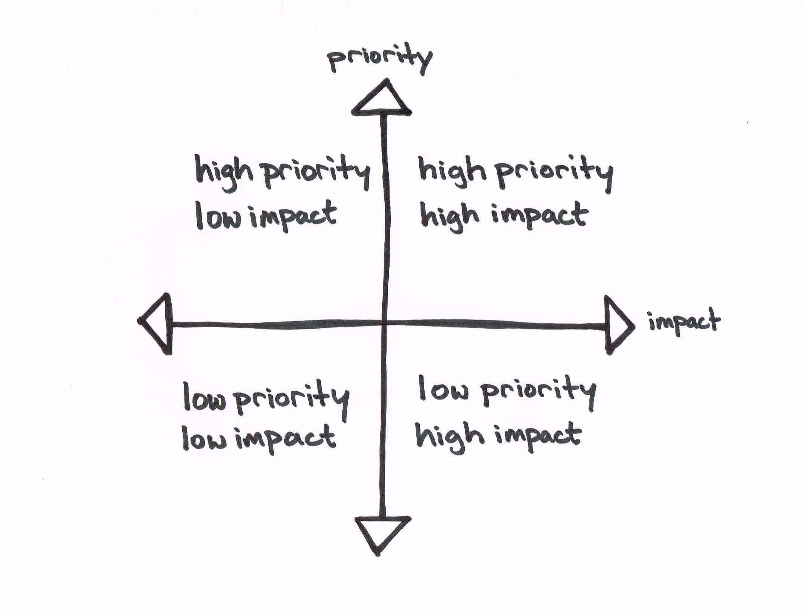

Staying Focused and Understanding Trade-offs
May 20, 2019
Published In:
While this post is focused on software development, I have also found these ideas useful in other contexts. In fact, I have developed these perspectives primarily outside of a software context...
Get Comfortable 'Not Knowing'
June 5, 2019
Published In:
I wrote an article a couple of weeks ago about prioritization and understanding goals in a broader context. A significant part of remaining goal oriented while navigating a complex problem or project, is being able to learn quickly and getting okay with not knowing....